1、程序调试
1.1 了解程序调试
(1) 概述
所谓程序调试，是在开发的程序投入实际使用前进行相关测试工作，修正语法错误和逻辑错误的过程，这是保证程序正常执行必不可少的步骤。
每一个程序几乎都需要经过反复调试、修改，才能最终完成。本节内容将介绍火山平台是如何进行调试工作的。
(2) 如何调试？
使用快捷键F5(部分电脑需要Fn + F5)可以开始程序调试工作，也可以点击火山平台上的绿色按钮进行调试。
注意：安卓平台调试需要使用安卓模拟器，使用手机调试需要打开开发者选项、USB调试、USB安装等相关设置项。
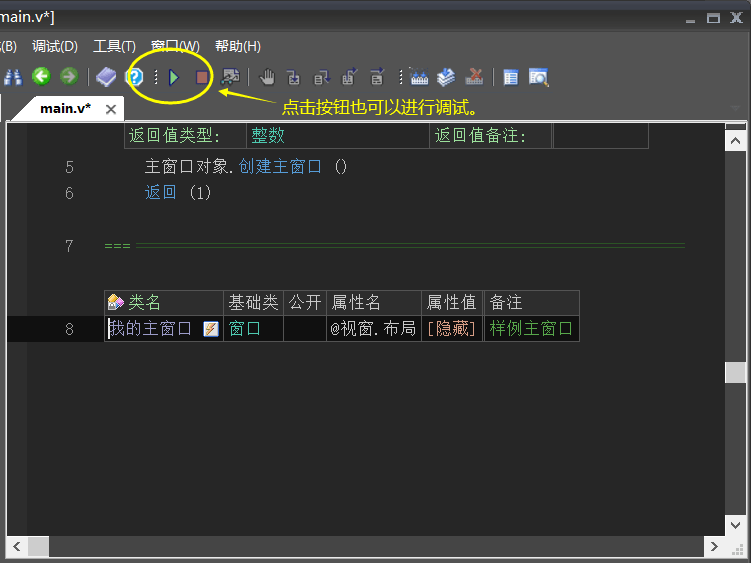
(3) 程序错误分类
程序中的错误一般分为“语法错误”和“逻辑错误”。
语法错误：是指程序代码不符合火山语法规范，这种错误是最容易发现并修改的。在程序调试时，火山平台会首先进行基本语法检查，如果出现语法不规范的情况会立刻中断调试，并且光标会定位在错误位置并输出相关的错误信息，根据错误提示进行修改即可。
如下图所示：
当给整数变量赋值文本数据，进行程序调试时火山平台会直接报错，并告知错误位置和错误原因。
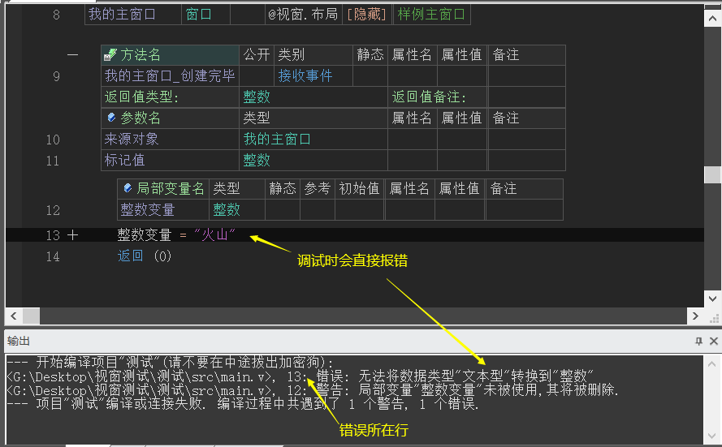
逻辑错误：是指程序执行流程上的错误，一般情况下程序可以正常运行，但是运行后的执行结果和预期不符，或者程序发生发生报错，闪退等情况。这种错误火山无法通过语法检查主动发现，需要程序开发者利用火山中相关的调试命令进行错误定位，最终解决这个问题。
1.2 程序调试命令
注：所有调试相关命令都会在编译程序发布版时被跳过。
1.2.1 调试输出
本命令用于在调试版中输出调试信息到火山平台的“调试”消息栏中，不同平台下可调试输出的类型不同，如下所示：
安卓平台：
如下图所示，在安卓平台中调试输出只能用于输出文本型数据或格式文本数据。
参数1：用于提供要输出的格式文本或普通文本。
参数2：当参数1提供格式文本时，本参数需要提供格式替换符对应的数据类型。
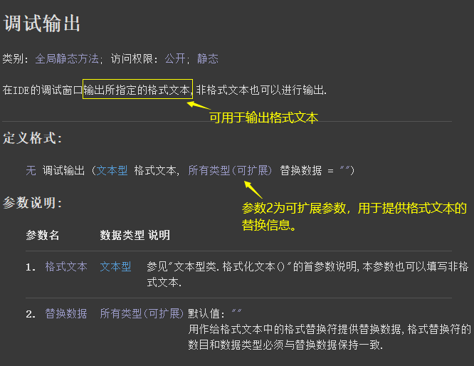
常用格式替换符如下：
常用格式替换符 解释 %n 换行符 %% 百分号本身 %f 小数 %d 整数(十进制) %o 整数(八进制) %b、%B 逻辑型 %h、%H 散列码 %s、%S 文本型 %c、%C 字符 %x、%X 整数(十六进制) %e、%E 指数型小数 %a、%A 十六进制小数型 %g、%G 通用小数型(自动选择%f和%e类型中较短者)
示例：
在窗口“通知_被创建”虚拟方法下分别输出普通文本和格式文本信息。
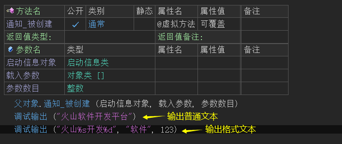
当程序进行调试时，就可以在火山软件的调试栏中看到程序的调试信息。
注：因安卓系统的缘故，有时候调试信息可能会有延迟。
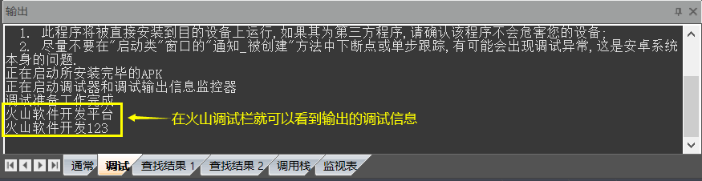
视窗平台：
如下图所示，在视窗平台中调试输出可输出多种数据类型，并且可以同时输出多条数据。
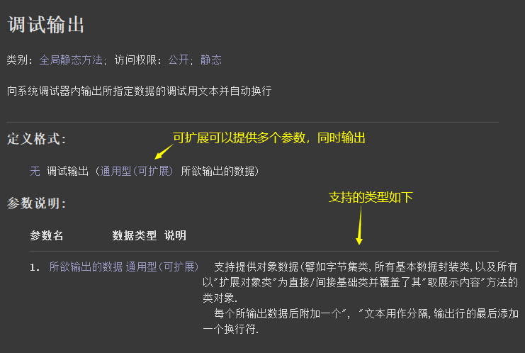
示例：
在窗口“创建完毕”事件下输出各种类型数据。
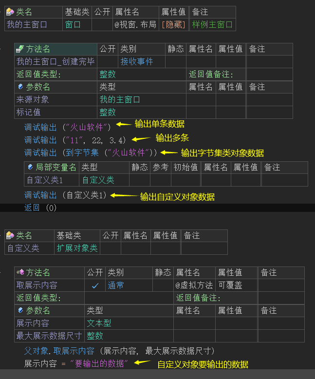
当程序进行调试时，就可以在火山软件的调试栏中看到程序的调试信息。
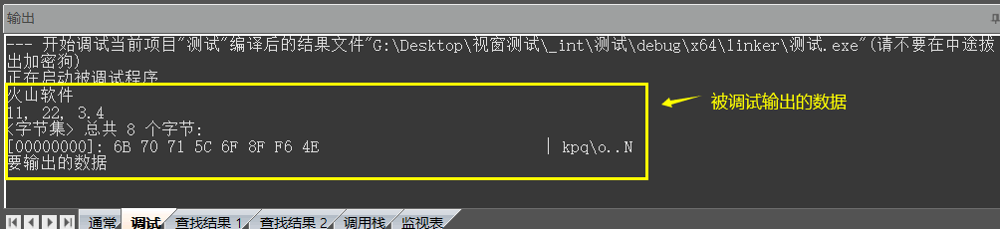
1.2.2 调试输出当前语句位置
本命令用于输出当前语句所处位置到火山软件的调试栏中，方便定位错误位置。
位置信息依次为：<所处源文件名>、所处源文件行号、 所处包名.所处类名、 所处方法名。
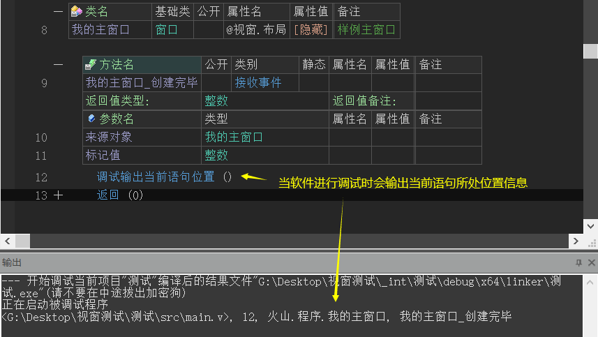
1.2.3 取当前语句位置
本命令可以直接取出当前语句位置文本，如下所示：
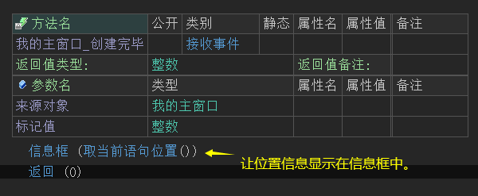
最终当软件进行调试时，会输出当前语句位置到信息框中。
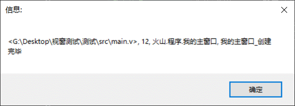
1.2.4 为调试版
本命令用于判断当前软件是否为调试版，如果为调试版返回真。
本命令可用于在调试版时进行一些数据测试等操作。
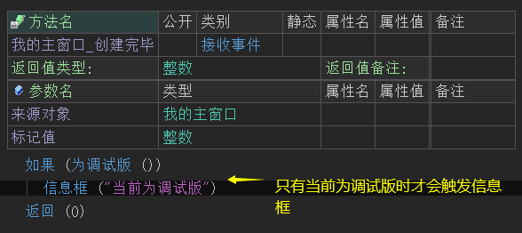
当软件调试时会弹出信息框。
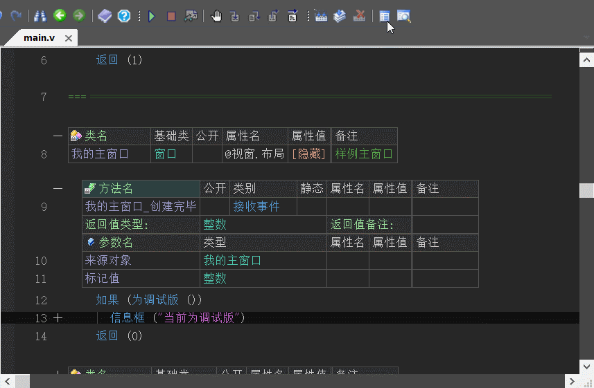
1.2.5 调试检查
本命令共有两个参数：
参数1：在调试版中，当此参数值为假时，程序将中断执行并报错。
参数2：指定当检查失败时(检查值参数为假)所输出的信息，如果被省略，则默认为空文本。
注：本关键字在增强程序可靠性方面非常有用，可以在程序中大量使用本关键字语句检查相关处理数据的合法性，又不用担心编译程序的发布版本时这些检查语句降低了程序执行效率。
如下图所示：
程序将会中断到当前语句的下一行位置，并在程序调试栏输出错误信息。
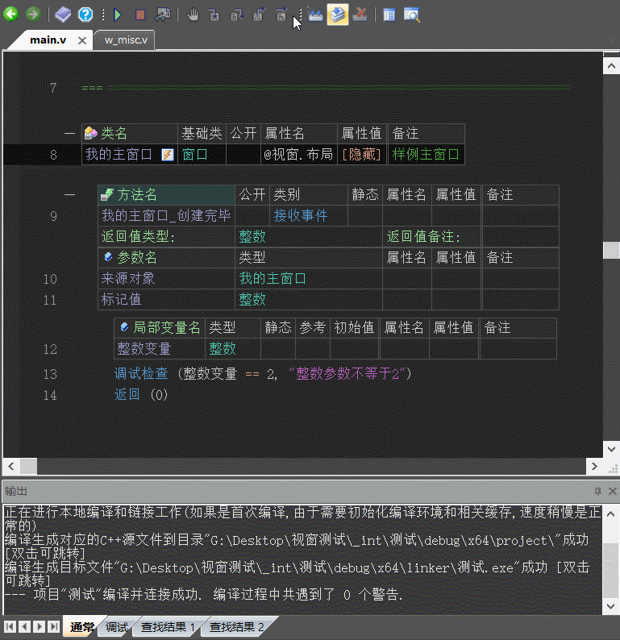
1.2.6 编译出错
本命令仅在编译程序时起作用，编译器一旦编译到具有本关键字的语句，就会报告发现了编译错误并停止编译。
本关键字普通用户无需深入了解。
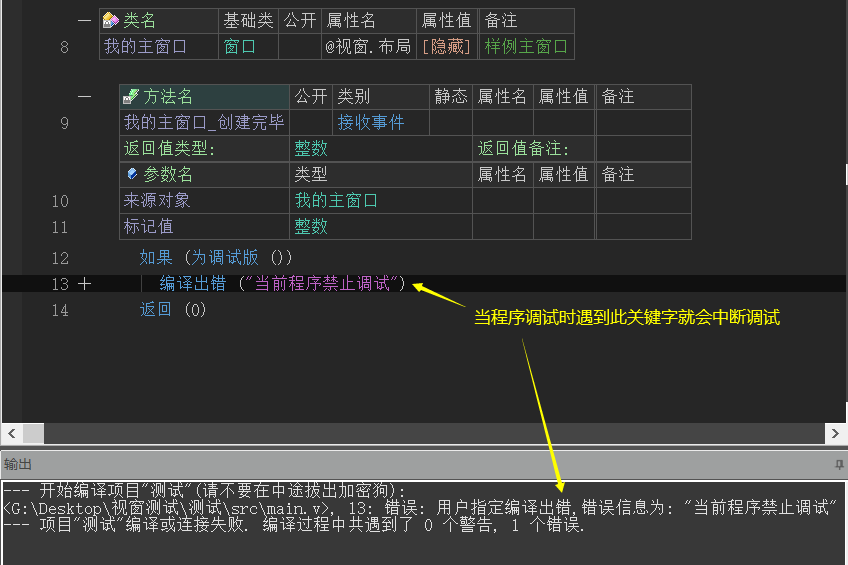
1.3 调试器使用
调试器用于软件在调试时动态跟踪代码执行流程，可以进行查看、修改、监视变量等行为，其功能位于“调试”菜单中。
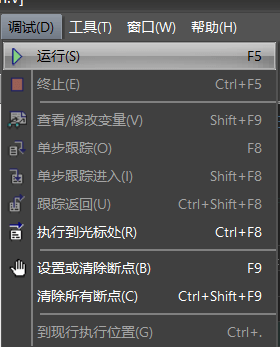
调试菜单说明如下：
(1) 运行：用于调试程序。
(2) 终止：用于终止被调试的程序。
(3) 查看/修改变量：在调试过程中，可以查看指定变量的值，并可以加入变量到监视表中。
(4) 单步跟踪：在程序现行运行位置单步执行一行程序，如果此程序行调用了其它方法，系统不会跟踪到此方法中。
(5) 单步跟踪进入：在程序现行运行位置单步执行一行程序，如果此程序行调用了其它方法，系统会跟踪到此方法中。
(6) 跟踪返回：在被调用的方法中设置断点，断点行被跟踪后，跳出当前方法，系统跟踪至上级方法调用当前方法语句的下一行代码。
(7) 执行到光标处：调试程序时会在光标位置所在行中断执行。
(8) 设置或清除断点：手动的在程序某一行设置或清除断点，如果有断点则清除，如果没有则会设置一个断点，程序执行到此位置时会中断执行。
(9) 清除所有断点：用于清除程序所有断点。
(10) 到现行执行位置：跳转到现行执行位置。
下面介绍具体如何使用：
1.3.1 执行到光标处
如下图所示：
执行程序时，到光标所在行时会中断执行。
程序中断后会在程序行最左侧位置显示一个换色箭头，此时就可以进行“查看/修改变量”或“单步跟踪”等操作。
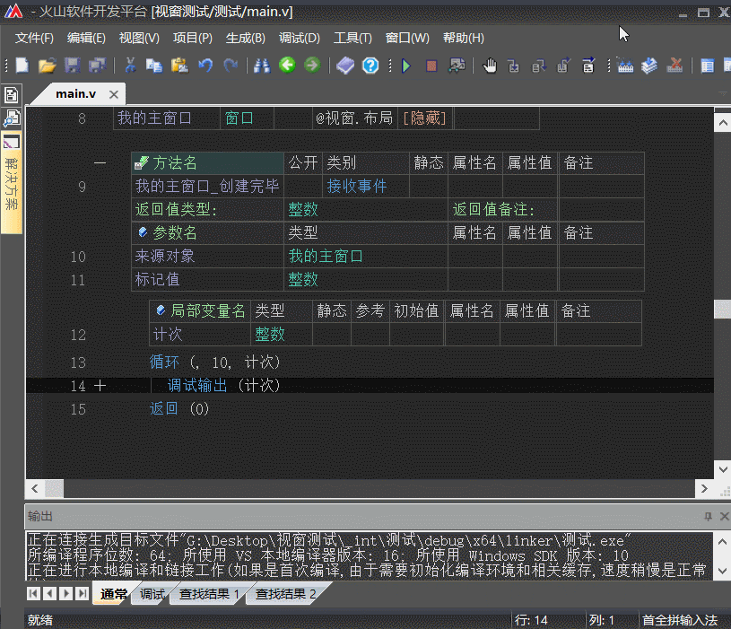
1.3.2 断点调试
除了通过快捷键F9设置/清除断点外，还可以通过鼠标点击代码行最左侧空白位置设置/清除断点。
断点设置成功后会出现一个红色的实心圆。
注：只有方法的子语句体内可以设置断点。
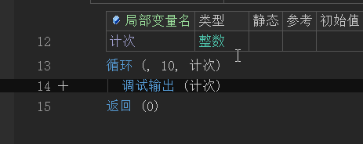
当断点设置后，程序运行时会中断到断点位置(会出现黄色箭头提示)，此时就可以进行“查看/修改变量”或“单步跟踪”等操作。
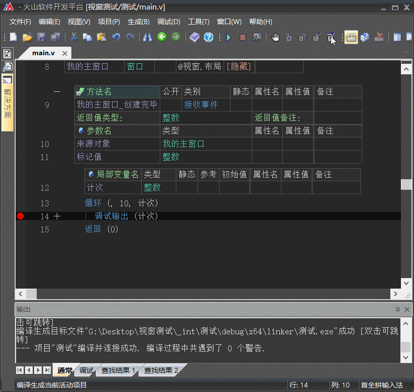
1.3.3 查看变量
当程序被调试器中断后，可以通过鼠标悬浮变量名称查看变量值。
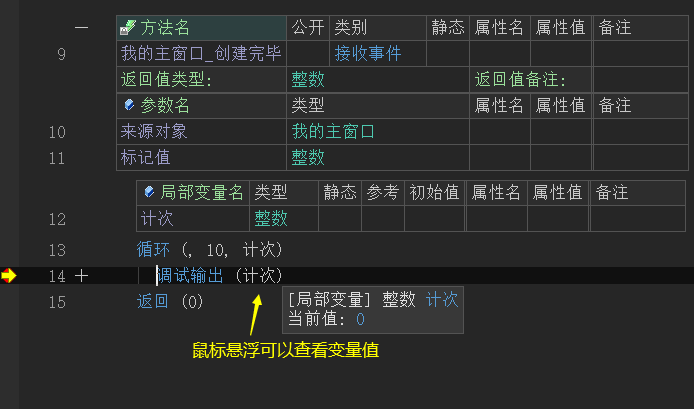
也可以通过光标定位变量名称，按Shift + F9进行查看变量值。
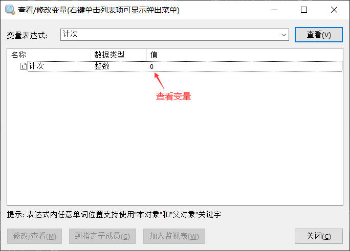
1.3.4 修改变量
在查看/修改变量窗口，可以通过双击变量所在行，进行修改变量值。
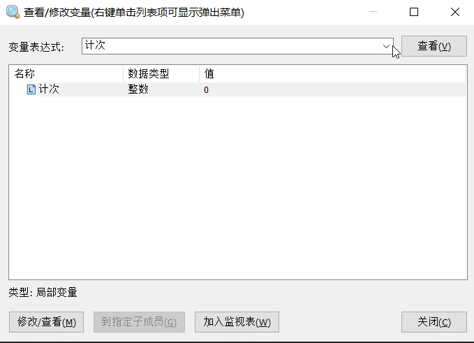
当变量被修改后也会影响程序最终执行结果，在实际程序调试过程中可以利用此特性动态进行一些数据测试。
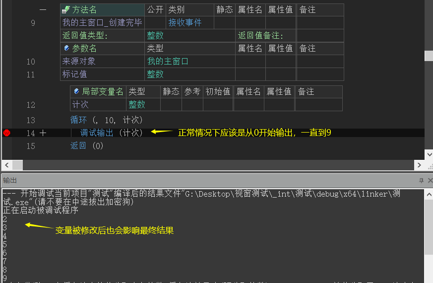
1.3.5 监视变量
在查看/修改变量窗口，可以选择一个变量，并将其加入到监视表中，可用于监视变量变化。
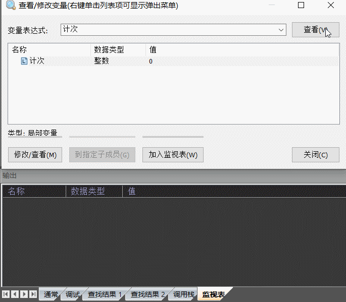
按F5快捷键或点击运行按钮可继续执行程序，会发现被监视的变量也一直在更新，将变量加入检视表后，方便动态查看变量的数据值。
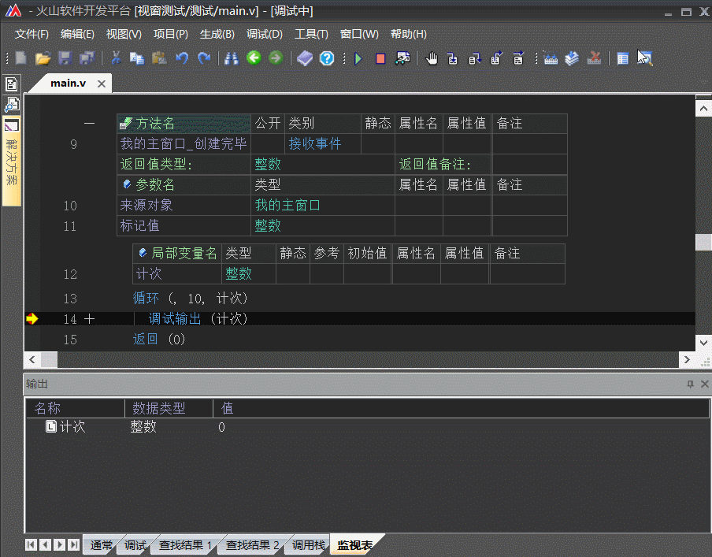
1.3.6 单步跟踪
每次按一次F8都会向下执行一行并中断执行，直到整个程序执行结束。
注：如果程序行存在方法调用，并不会跟踪到方法中。
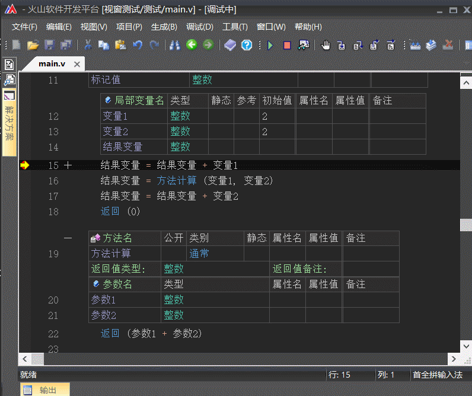
1.3.7 单步跟踪进入
每次按一次Shift + F8都会向下执行一行并中断执行，直到整个程序执行结束。
注：如果程序行存在方法调用，会跟踪到方法中进行中。
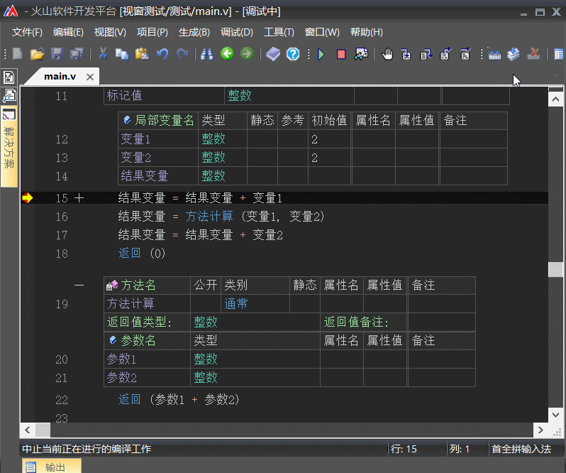
1.3.8 跟踪返回
执行跟踪返回，会跳出当前方法，系统跟踪至上级方法调用当前方法语句的下一行代码。
如下图，22行位置被中断，会返回到17行的位置。
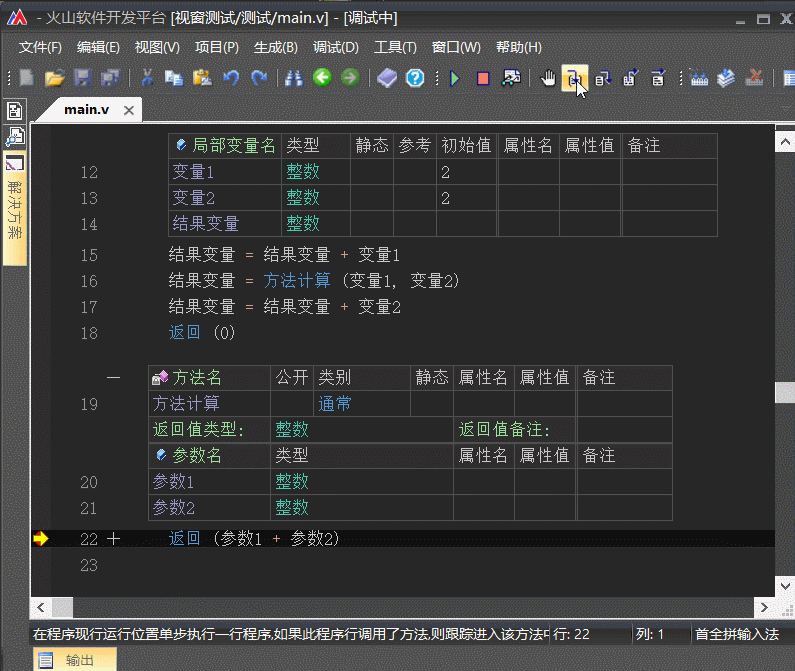
1.3.9 清除所有断点
如下图，用于清除所有断点。
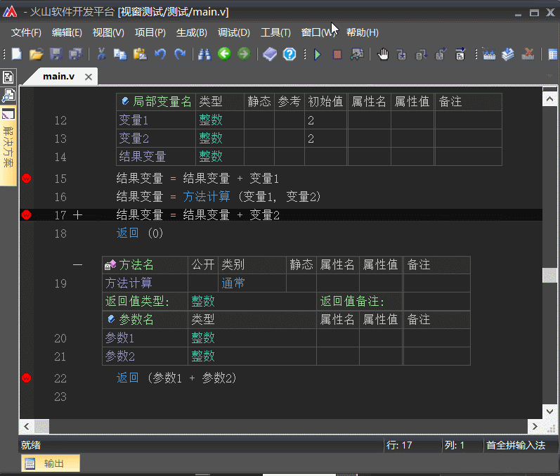
2、异常处理
2.1 异常概述
异常是指程序在运行时产生的一些错误，譬如：程序发生闪退，就属于异常的一种。
异常发生的原因一般都是程序逻辑错误导致，很多异常也是可以避免的，譬如：在安卓平台中打开一个不存在的文件就会产生异常，因此打开文件之前可以首先判断文件是否存在，这样就可以避免打开文件时产生的异常。
示例：
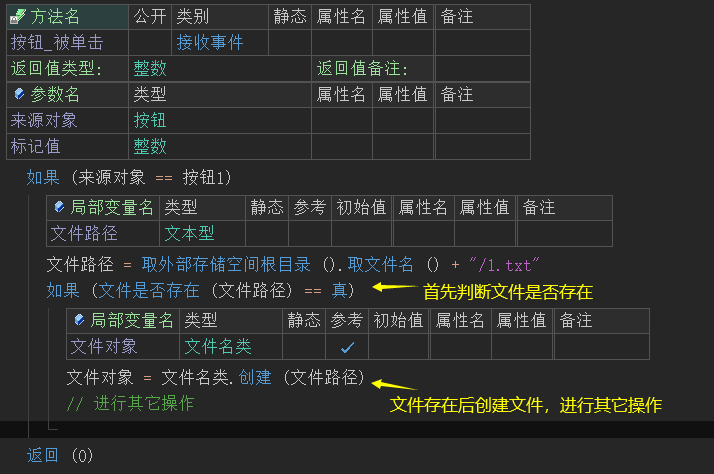
2.2 如何俘获异常
安卓平台：
如下图为火山安卓平台中的异常处理方法。
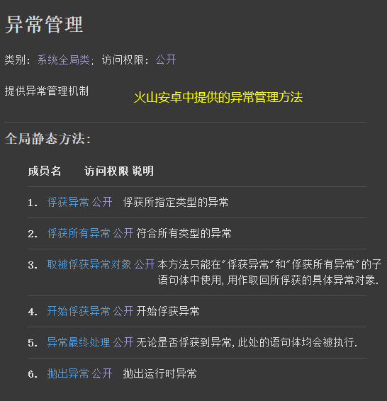
使用“开始俘获异常()”方法并在其子语句体内提供要俘获异常的代码，并配合“俘获所有异常()”方法就可以俘获程序运行时产生的异常。
示例如下：
在“开始俘获异常()”的子语句体内模拟一个数组成员溢出的操作，并在“俘获所有溢出()”的子语句体内提供异常提示信息。
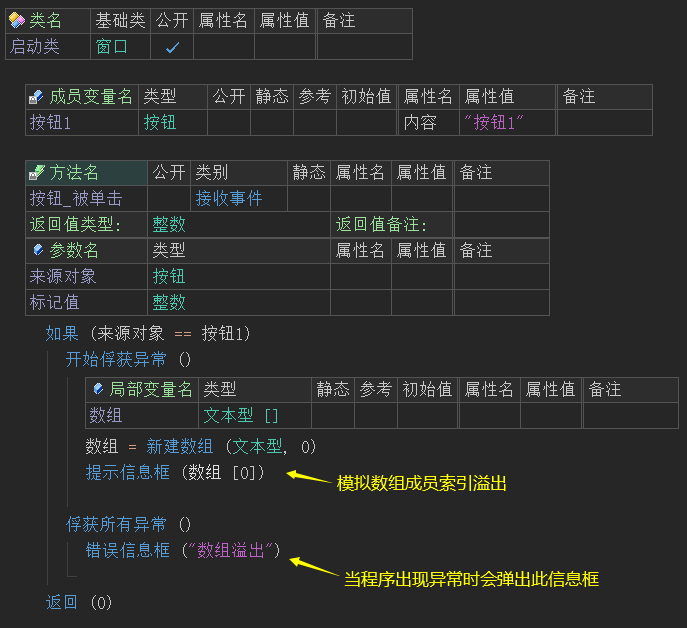
最终程序并不会因为数组成员溢出发生闪退，而会提示错误信息(此错误信息也可以不提供)。
利用“取被俘获异常对象 ().取异常文本 ()”还可以取出java异常描述，普通用户知道即可。
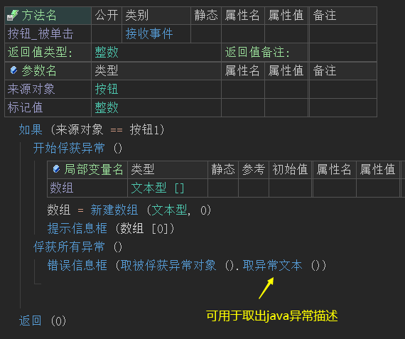
视窗平台：
如下图为火山视窗平台中的异常处理方法。
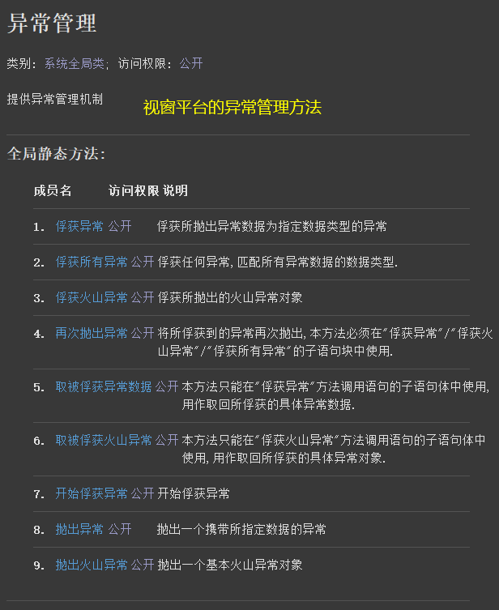
视窗中的使用方式和安卓中基本一致，除了使用“开始俘获异常()”和“俘获所有异常()”外，还需要配合“抛出异常()”方法使用。
示例如下：
利用“除法运算()”方法模拟一个除以零的异常，在该方法中进行抛出异常，只有抛出异常后才可以被“俘获所有异常()”方法进行俘获。
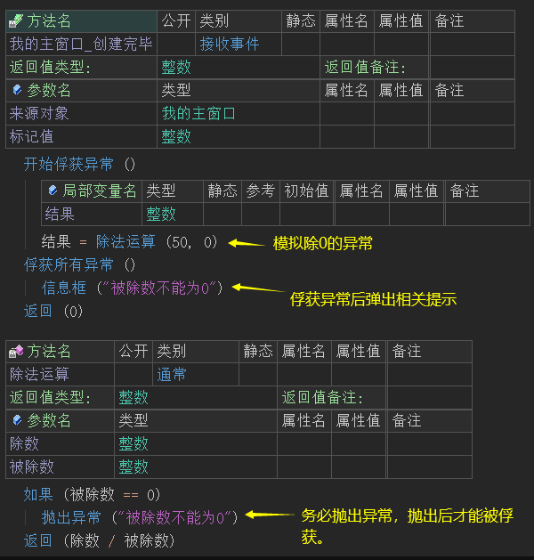
最终程序可以俘获到被除数为0的异常错误。
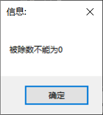